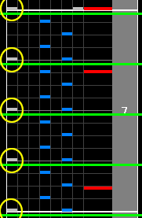
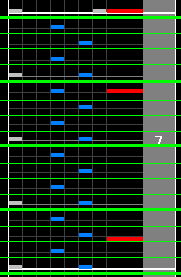

📑 文章目录（3 节）
可能很多人把“硬按（ガチ押し）”理解为“不使用馅蜜（あんみつ）”，但这里要讲解的“硬按理论”完全是另一种含义。
简而言之，这是一套用于将 BPM 140 左右及以下的 16 分音符谱面稳稳打光（P-GREAT）的理论。
常规的读谱方式
下面以 BLOCKS(A)（BPM 141）的谱面为例进行说明。

采用常规的读谱方式时，会像左图那样把小节按4 分音符为单位切分，以容易听清的声音或显眼的音符作为基准来稳定节奏。在这个例子里，就是以黄圈标出的音符为基准。
打的时候，想象把黄圈标出的音符稍微敲重一点。这样一来，交互（Trill）的节奏也会自然而然对上。
平时还没有这个意识的玩家，建议先掌握这种方法，再去学习硬按。对于硬按应付不过来的高速谱面（如 BPM 160 以上），这种读谱方式才是最合适的。
硬按（ガチ押し）的读谱方式
接下来讲解硬按。

硬按则会进一步细分到 16 分音符为单位。
刚才我们是把这段谱面识别为“1 键底鼓 ＋ 交互”。虽然同样是用底鼓声来稳住节奏，但在硬按中，我们要把它识别为“同时押 → 单点 → 单点 → 单点 → 同时押 → ……”。
也就是所谓的横向读谱（横认识）。
硬按的诀窍大致有两个。
第一个诀窍是，始终保持每次按键都重置指法（运指）的意识。
例如面对 1→2→3→4 的 16 分楼梯时，大多数人会用类似顺滑滚指的指法来按，比如无名指 → 中指 → 大拇指 → 食指这样连贯地扫过去。
但在硬按中，要想象每按一个键就把指法重置一次。
也就是无名指 → 重置 → 中指 → 重置 → 大拇指 → 重置 → 食指，大概就是这种感觉。
这和打大量 8 分同时押谱面（如 EDEN、CROSS ROAD 等）时的击键感觉是一样的。
思路其实很简单，如果是 BPM 150 的 16 分谱面，只要抱着打 BPM 300 的 8 分谱面的感觉去按就行了。（引自 TANMEN 先生的博客）
http://d.hatena.ne.jp/tanmeen/20101023#1287838144
而另一个诀窍，则是把握所有要敲响的声音（脑内配音 / 音乗せ）。
所谓“音乗せ”，简单来说就是提前把握（预判）
按下每个音符（Object）时会发出的声音。
（就像在脑海里给每一个音符都贴上对应音效一样的感觉）
在最开始介绍的常规读谱方式里，只需要给维持节奏所必需的底鼓（1 键）做脑内配音就够了；但在硬按中，要对所有的音符都进行脑内配音。
还是以 BLOCKS 为例，按照最初的做法，只需要在脑中想着
“咚 咚 咚 咚……（底鼓）”
就可以了。
而硬按的诀窍在于，除此之外还要同时在脑中想象
“哒咔哒咔哒咔哒咔……（军鼓）”
等其他声部的声音。
硬按的练习方法
把所有音符都用横向读谱（横认识）去处理，这就是硬按理论。练习时非常推荐开启 BPM 140 以下曲目的 S-RANDOM（超乱）。
BPM 100～130
- YELLOW FROG from Steel Chronicle
- A MINSTREL 〜ver.short-scape〜
- Jack
- Mind Mapping
BPM 130～150
- KAMIKAZE
- Let the Snow Paint Me
- Heavenly Sun(IIDX VERSION)
- 超!!遠距離らぶ♡メ〜ル
- RISLIM-Remix-
- with you…
- Harmony and Lovely
- SPACE FIGHT
- LUV CAN SAVE U
- Light Shine
- Mermaid girl
- Sense 2007
- BLOCKS
- Shining World
- the trigger of innocence
以上这些曲子特别适合用来开 S-RANDOM（超乱）练习。
💬 读者评论与作者答疑（1 组对话）